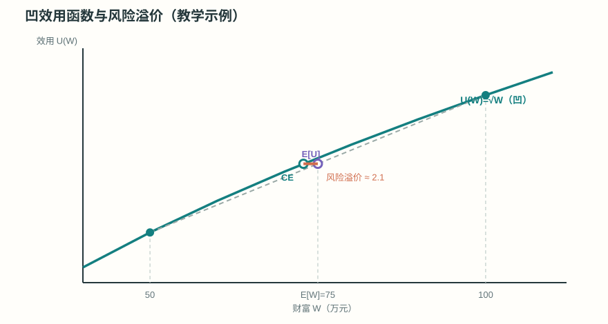
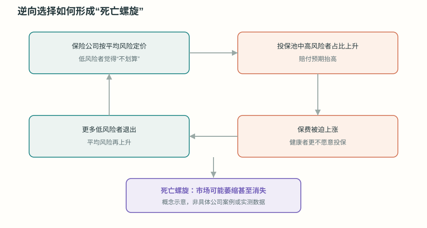

CHAPTER 25 · MICROECONOMICS
风险、不确定性与保险
先区分“概率已知的风险”与“概率未知的不确定性”，再用期望效用解释风险规避与保险，最后说明逆向选择为何可能压垮保险市场。
要不要买保险
你有一笔 100 万元的积蓄。明年有 1% 的概率遭遇一场事故，损失 50 万元。保险公司说：交 0.6 万元保费，出事全额赔付。买还是不买？
直觉会说：期望损失只有 0.5 万元，却要交 0.6 万元，不划算。但如果这样做决策，你会忽略一件重要的事——50 万元损失带来的痛苦，远大于 0.6 万元保费的代价。这就是本章要拆解的“风险决策”。
风险与不确定性：概率知道吗
“风险”与“不确定性”常被混用，但弗兰克·奈特 Frank Knight 在 1921 年做出关键区分：风险 risk 是结果不确定、但概率已知的情形（如掷骰子、死亡率表）；不确定性 uncertainty 是连概率都不知道的情形（如十年后某项技术是否会取代一个职业）。奈特进一步指出存在“未知的未知”——连可能的结果集都不清楚。
这个区分很重要：期望值、方差、资产定价这些工具都依赖“已知概率”。当概率未知时，它们只能退回为参考，而不能直接套用。
期望效用与风险规避
冯·诺依曼与莫根施特恩（1944）提出期望效用理论 expected utility theory：面对风险，人最大化的不是期望金钱，而是期望效用。若财富的效用函数是凹的（边际效用递减），人就会风险规避。
凹函数会把“不确定”拉低：一笔“财富 50 与 100 各半”的赌博，期望财富是 75，但期望效用落在弦上，对应的确定等价 certainty equivalent CE 低于 75，差额就是风险溢价 risk premium。

取 U(W)=√W、W=100、损失 L=50、概率 p=1%。不买保险时 E[U]=0.99×√100+0.01×√50≈9.971，确定等价 CE=E[U]²≈99.415 万元。精算公平保费是 p×L=0.5 万元；而这个风险规避者愿意支付的上限是 100−99.415≈0.585 万元，其中超过公平保费的 0.085 万元就是风险溢价。
所以若市场保费是 0.6 万元，本例中的人会选择不买——是否投保取决于保费与风险溢价的高低，而不是简单地比大小。
保险为什么能成立
保险的本质是用一笔确定的小额支出（保费），换取消除大额损失风险。在边际效用递减的世界里，它把“受损”与“不受损”两种状态下的消费拉平，这就是消费平滑 consumption smoothing：两个状态的消费越接近，风险规避者的总效用越高。
保险公司能运转，靠的是大数定律：单个投保人的出险是随机的，但当投保人足够多且相互独立时，总体赔付率可以被估得很准。保费还包含管理费、理赔成本与合理利润，因此总是高于精算公平保费（等于期望赔付额）。保费高出公平保费的幅度，就是投保人支付的风险溢价加上保险公司的成本与利润。
交互实验：公平保费与风险溢价
风险规避者愿意付多少
固定财富 W=100 万元、损失 L=50 万元、效用 U(W)=√W，拖动滑块改变出险概率 p，观察精算公平保费、确定等价与最大可接受保费如何变化。
p=1%：公平保费 0.5 万元，期望效用 E[U]≈9.971，确定等价 CE≈99.415 万元，风险溢价≈0.085 万元，最大可接受保费≈0.585 万元。对应正文的教学示例。
公平保费=p×L；CE=E[U]²，E[U]=(1−p)√W+p√(W−L)。W=100、L=50，p=1% 对应正文示例，不使用随机值。
当 p 从 1% 升到 10%，公平保费和风险溢价各怎么变？为什么高风险反而更难获得保险？
查看答案
公平保费随 p 线性上升；风险溢价也随 p 上升（不确定性越大，消除它的价值越高）。但高风险下逆向选择更严重：若保险公司无法区分风险，只能按平均风险定价，高风险者更愿投保而低风险者退出，市场会趋向萎缩，这正是下一节的“死亡螺旋”。
市场失灵与边界
保险市场有两个根深蒂固的问题。逆向选择 adverse selection发生在投保之前：风险最高的人最急于投保，低风险者倾向退出；若只能按平均风险定价，池中平均风险不断上升，形成死亡螺旋，市场可能萎缩甚至消失。道德风险 moral hazard发生在投保之后：损失由保险公司承担时，投保人预防损失的动机下降。

常见应对手段包括：强制投保（打破逆向选择循环）、免赔额与共付比例（减少道德风险）、健康审查与风险分级（应对逆向选择）。但这些手段各有代价：风险分级可能使高风险者难以负担，强制投保又会压缩个人选择。
当连概率都未知（奈特式不确定性）时，期望效用只能作为参考。此时更实用的工具是：把不可逆决策拆成阶段、先试点获信息（实物期权），以及用多样化与冗余缓冲降低单一情境的冲击。
引用文献与适用范围
本章数值（W=100、L=50、p=1%、公平保费 0.5、CE≈99.415、最大可接受保费≈0.585 万元）均为教学示例，不是实测数据；风险与不确定性的区分、期望效用与保险概念的参考如下。
- OpenStax · Principles of Microeconomics 3e（含风险与保险相关章节）
- Knight, F. H. (1921). Risk, Uncertainty and Profit. Houghton Mifflin.（风险与不确定性的经典区分）
- von Neumann, J. & Morgenstern, O. (1944). Theory of Games and Economic Behavior. Princeton University Press.（期望效用框架）
本章的效用函数取 U(W)=√W 以便手算，属于教学简化；真实的保费与风险分级取决于监管、信息与市场竞争，本章不给出具体费率建议。